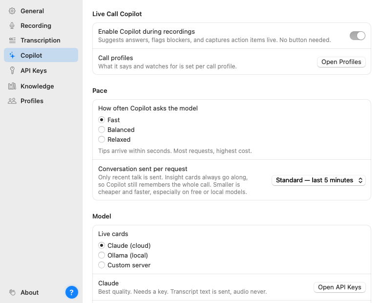

The Copilot is the AI layer: live suggestion cards during the call and the report afterwards. It is off by default and Parrot works perfectly well as a recorder and transcriber without it. When you want it, flip it on in Settings → Copilot and pick who does the thinking.
On Claude, there is one optional extra: a TypeSafe AI key (Settings → API Keys). With it, the moment the other side asks something your documents cover, Parrot shows the matching excerpt as a "From your docs" card, usually within a second, while Claude is still writing its answer. Claude's card then takes over. Without the key nothing changes. It sends the question, a couple of lines of context and the matching snippets of your documents to TypeSafe, never audio, and it only works when your documents are tagged into the call profile you are using.
Live cards need to be quick and sharp. The post-call report has all the time in the world. So Parrot lets you pick a different backend for each: a common combo is Claude for the live cards and a local model for reports, which keeps reports free and private without slowing the call down. If you only set up one, both jobs use it.